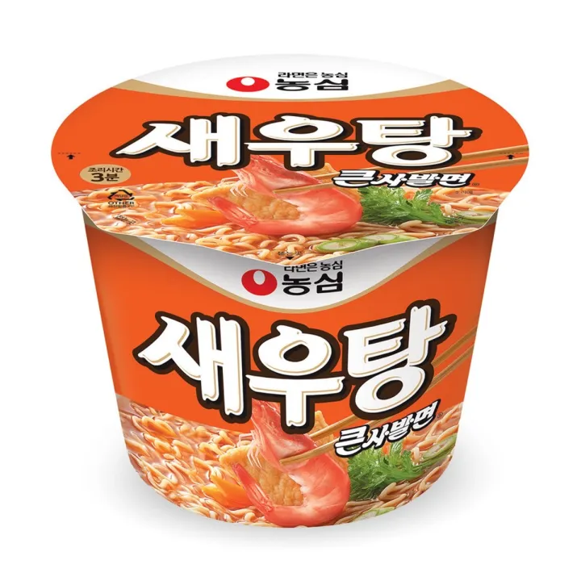
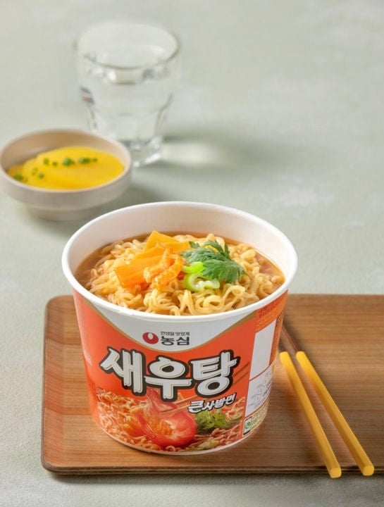

<div> <table style="border-collapse: collapse; width: 99.9809%;" border="1"><colgroup><col style="width: 49.9522%;"><col style="width: 49.9522%;"></colgroup> <tbody> <tr> <td> <div><span style="font-size: 14pt;"><strong>Ramen picant cu aroma de creveti Nongshim Big Bowl, 115g</strong></span></div> <div><span style="font-size: 14pt;">Savoarea autentică a fructelor de mare. Acest pahar mare de ramen de la Nongshim combină tăițeii elastici cu o supă bogată, infuzată cu esență de creveți și legume deshidratate. Un format practic și consistent, perfect pentru iubitorii aromelor marine tradiționale, gata &icirc;n doar 3 minute.</span></div> </td> <td></td> </tr> <tr> <td></td> <td><span style="font-size: 14pt;">Pr&acirc;nzul tău asiatic, simplu și rafinat. Savurează un bol de ramen cu creveți preparat impecabil, unde tăițeii fini absorb perfect supa caldă și aromată. Adaugă c&acirc;teva ierburi proaspete deasupra pentru un plus de culoare și bucură-te de o masă coreeană autentică, rapidă și plină de confort.</span></td> </tr> <tr> <td><span style="font-size: 14pt;">O briză de prospețime marină. Nongshim Saewootang &icirc;ți aduce gustul curat și revigorant al unui ramen premium cu creveți. Cu o supă clară, ideal aromată și ușor picantă, această porție caldă este evadarea culinară perfectă spre coastele Coreei, oriunde te-ai afla.</span></td> <td></td> </tr> </tbody> </table> </div>